Liturgia
A ordem do culto num bloco só.
Projeção para o culto · Android
A tela da sua igreja 100% controlada por você. Sem anúncios, sem janelas, sem distrações para o público.
{{TAMANHO}} · Android 8+ · versão {{VERSAO}}
Este app é só para Android. Ele não funciona em computador, iPhone ou iPad. Para baixar e instalar, abra esta página por um aparelho Android.
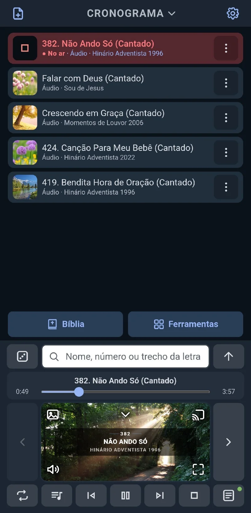
O culto inteiro
Hinários, Bíblia, vídeos e slides no mesmo lugar — e a projeção vai para a TV ou para um computador, sem espelhar o celular.
A ordem do culto num bloco só.
A TV mostra só o que você projeta.
Arraste para ordenar; ele avisa o que falta baixar.
Hinários e álbuns oficiais, baixados uma vez.
O episódio do sábado já em destaque.
A letra no telão, acompanhando a música.
Acordes no tom que você escolher, rolando sozinhos.
66 livros e 1.189 capítulos, sem internet.
Aviso, cronômetro e sorteio na tela.
Busque e baixe sem anúncios — vídeo ou só áudio; toca sem rede.
PDF, PowerPoint e Google Apresentações.
Até três navegadores, sem instalar nada.
Playlist automáticaRecebe de tudo Histórico do cultoFavoritosModo Fácil
A projeção não depende de internet. Na TV, pelo espelhamento; num computador, pelo navegador. Basta o Wi-Fi do local — e, sem nenhuma, o próprio celular vira o ponto de acesso.
Como é na prática
Do primeiro toque no sábado ao histórico do culto.
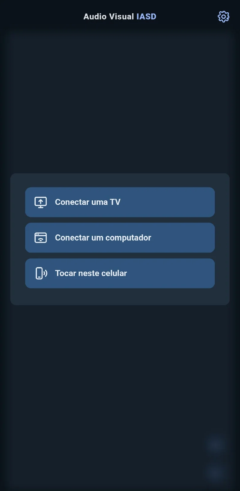
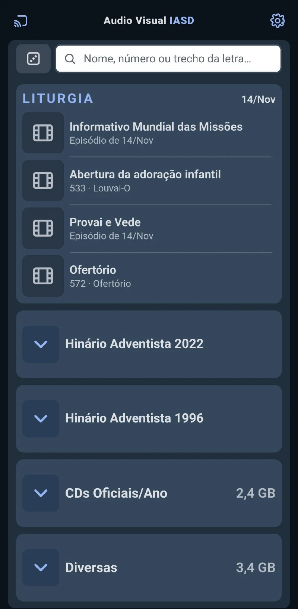
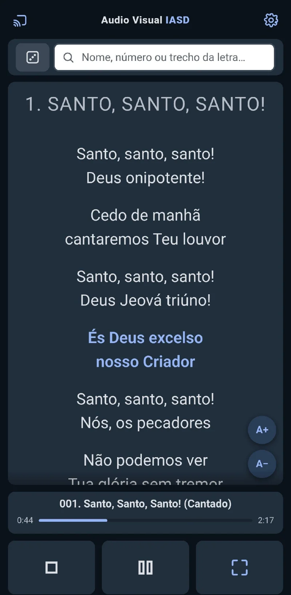
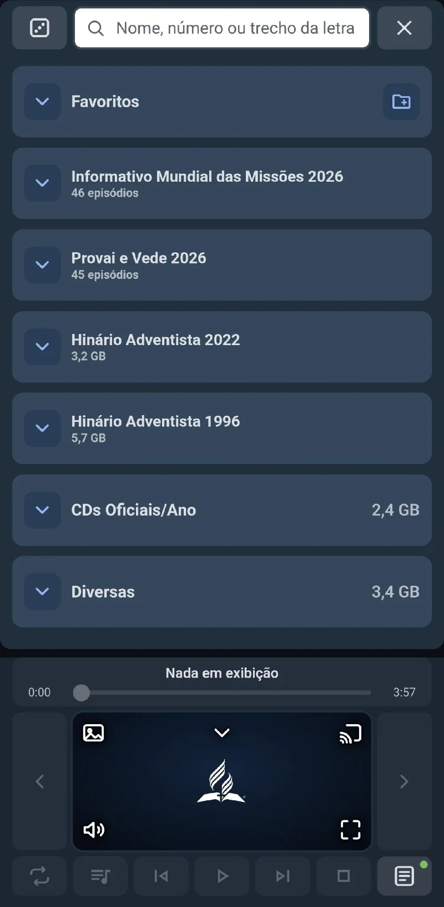
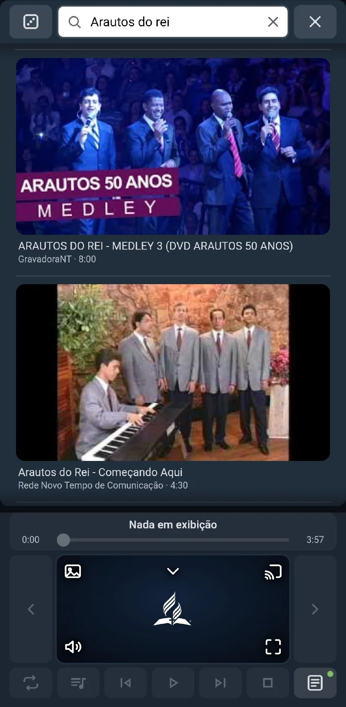
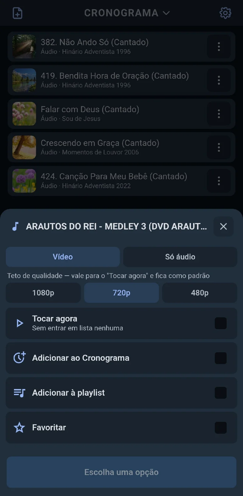
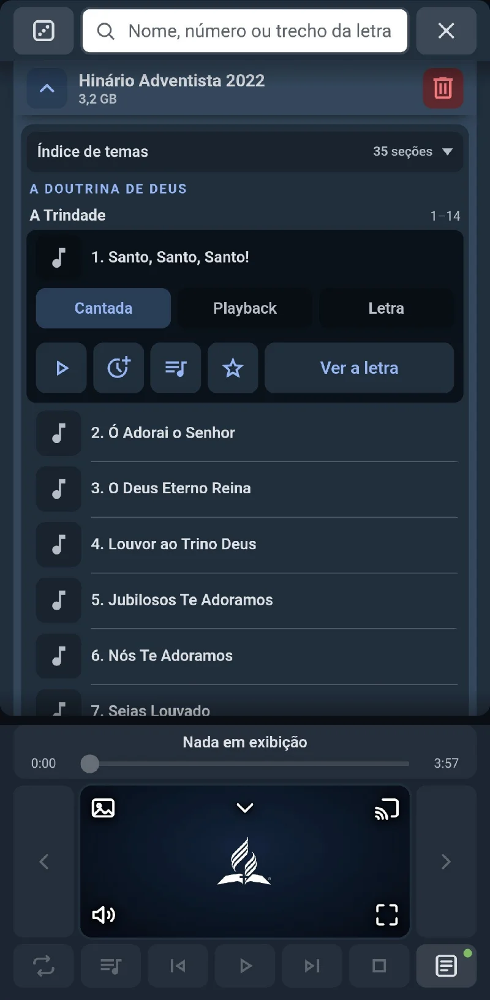
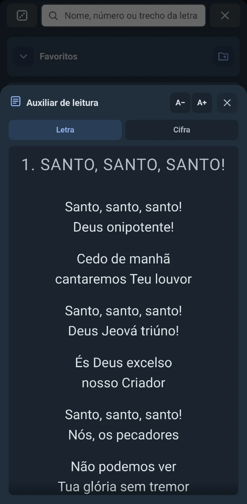
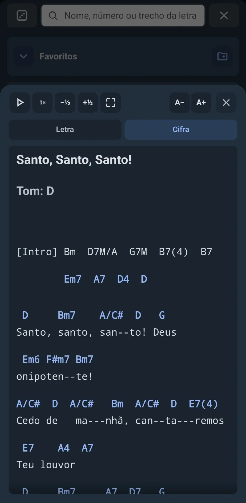
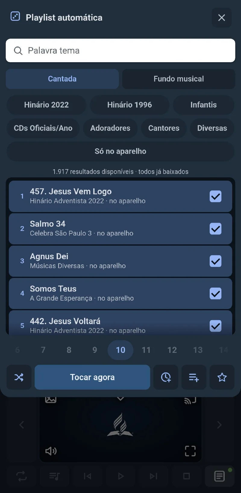
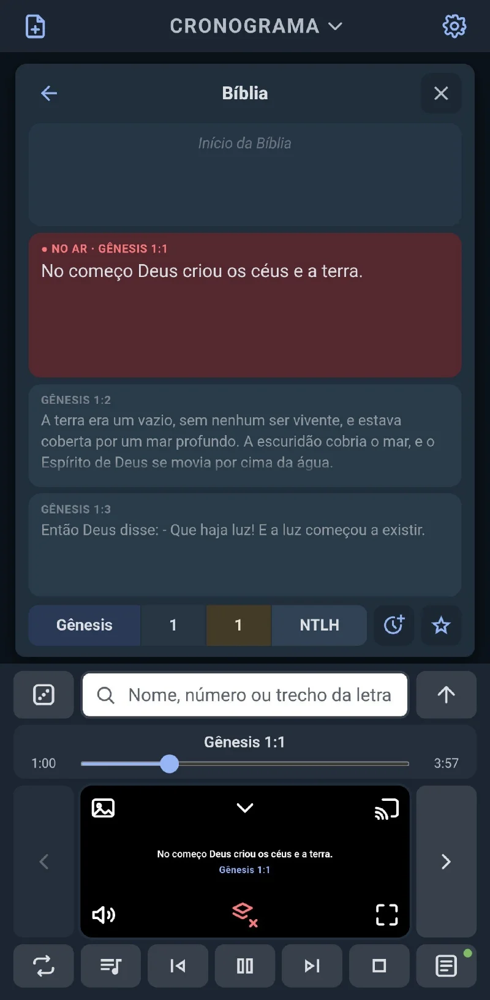
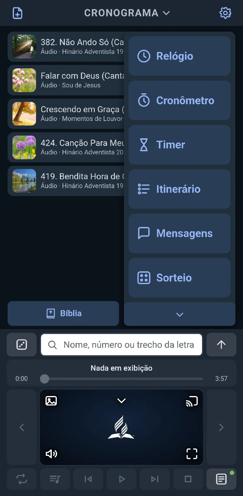
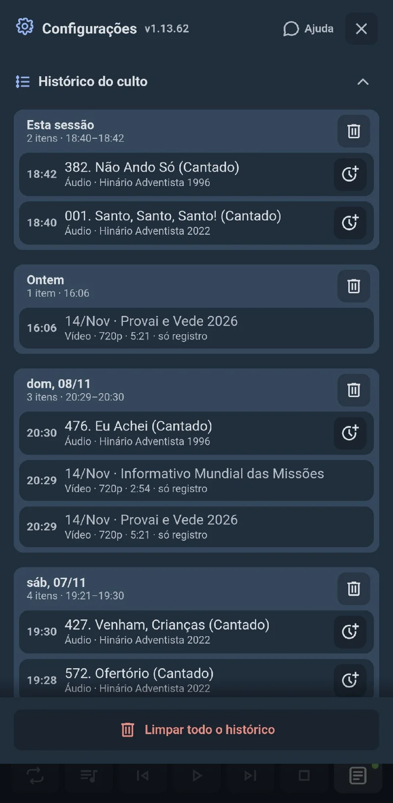
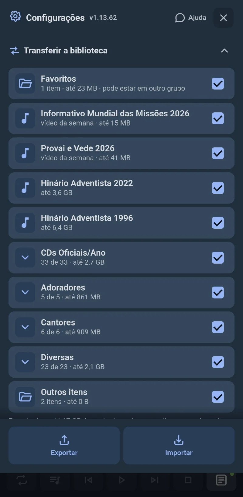
Dois jeitos de operar
Letras e teclas grandes, e a Liturgia do sábado já montada. É assim que o app abre — para conectar a TV e tocar o primeiro louvor sem procurar nada.
O culto inteiro à mão: cronograma, favoritos, coleções, playlist automática, ajustes de projeção e o Registro de diagnóstico.
Tocar neste celular libera a tela cheia para ensaiar, sem nada conectado — a mesma projeção, no próprio aparelho.
Em três passos
É um arquivo .apk: o Android pede uma confirmação.
Instalado uma vez, o app se atualiza sozinho.